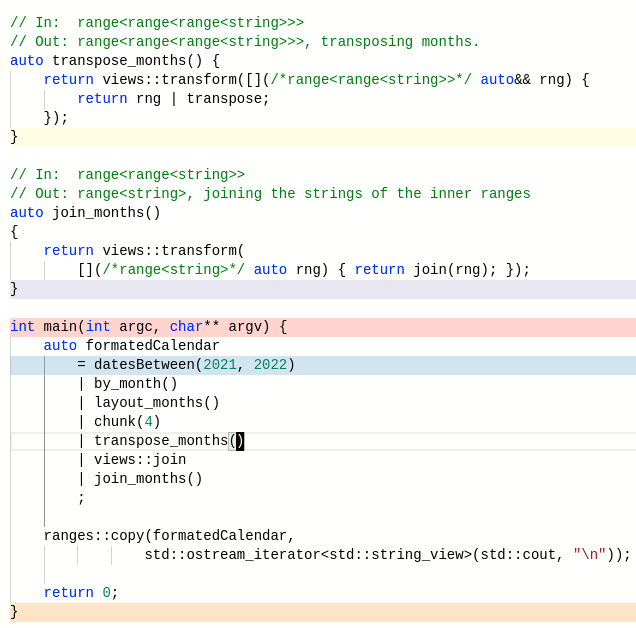
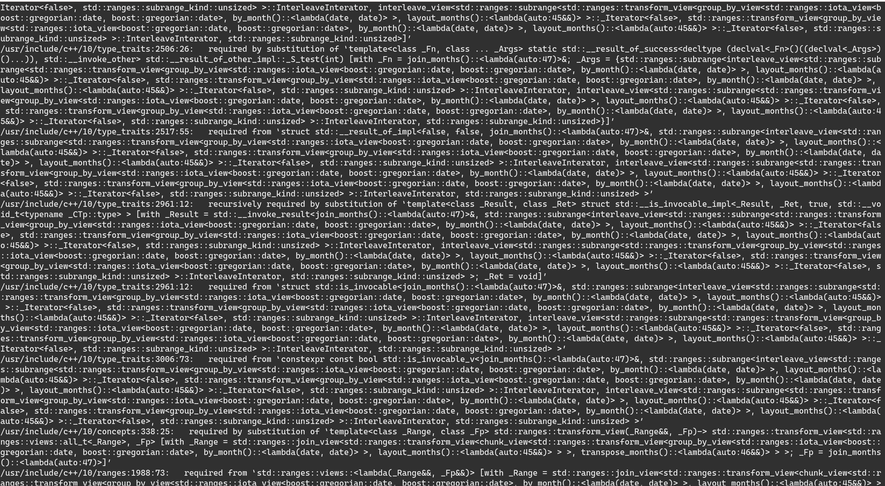

前言
花了我 3 个晚上才搞定，结论是目前 C++20 的 Ranges 标准库 对于实现复杂的程序还不够用，提供的 views 适配器组合子也仅仅局限于简单的 filter/transform 等，并且未提供标准的方式让用户去定义组合子（不过这个问题目前 C++23 已经有提案 P2387R0 在做了）。
通过自定义 views 组合子并完成一个相对复杂的程序，对于理解 Ranges 库的机制与原理是相当有帮助的。
完整可编译可运行的日历程序请见：https://godbolt.org/z/overc6q51，如果关注后续的代码更新，请见Calendar.cpp
效果如下（2021 年）
January February March
Su Mo Tu We Th Fr Sa Su Mo Tu We Th Fr Sa Su Mo Tu We Th Fr Sa
1 2 1 2 3 4 5 6 1 2 3 4 5 6
3 4 5 6 7 8 9 7 8 9 10 11 12 13 7 8 9 10 11 12 13
10 11 12 13 14 15 16 14 15 16 17 18 19 20 14 15 16 17 18 19 20
17 18 19 20 21 22 23 21 22 23 24 25 26 27 21 22 23 24 25 26 27
24 25 26 27 28 29 30 28 28 29 30 31
31
April May June
Su Mo Tu We Th Fr Sa Su Mo Tu We Th Fr Sa Su Mo Tu We Th Fr Sa
1 2 3 1 1 2 3 4 5
4 5 6 7 8 9 10 2 3 4 5 6 7 8 6 7 8 9 10 11 12
11 12 13 14 15 16 17 9 10 11 12 13 14 15 13 14 15 16 17 18 19
18 19 20 21 22 23 24 16 17 18 19 20 21 22 20 21 22 23 24 25 26
25 26 27 28 29 30 23 24 25 26 27 28 29 27 28 29 30
30 31
July August September
Su Mo Tu We Th Fr Sa Su Mo Tu We Th Fr Sa Su Mo Tu We Th Fr Sa
1 2 3 1 2 3 4 5 6 7 1 2 3 4
4 5 6 7 8 9 10 8 9 10 11 12 13 14 5 6 7 8 9 10 11
11 12 13 14 15 16 17 15 16 17 18 19 20 21 12 13 14 15 16 17 18
18 19 20 21 22 23 24 22 23 24 25 26 27 28 19 20 21 22 23 24 25
25 26 27 28 29 30 31 29 30 31 26 27 28 29 30
October November December
Su Mo Tu We Th Fr Sa Su Mo Tu We Th Fr Sa Su Mo Tu We Th Fr Sa
1 2 1 2 3 4 5 6 1 2 3 4
3 4 5 6 7 8 9 7 8 9 10 11 12 13 5 6 7 8 9 10 11
10 11 12 13 14 15 16 14 15 16 17 18 19 20 12 13 14 15 16 17 18
17 18 19 20 21 22 23 21 22 23 24 25 26 27 19 20 21 22 23 24 25
24 25 26 27 28 29 30 28 29 30 26 27 28 29 30 31
31日历程序问题分解
最终输出的结果是字符串，问题域如下：
- 以年为单位，一年 355/356 天，如何将每天按月、按周分组？（提示：group_by）
- 每个月每行输出的是一周 7 天，每天占宽 3 个字节，加一个填充位，总共 3 * 7 + 1 = 22 字节
- 每个月显示一行月份标题，一行星期标题，最多 6 周（6 行），不足 6 行的补齐空行到 6 行，因此一个月的字符矩阵为(6+2) x 22，总大小为 12 x 8 x 22
- 如何一行显示 N 个月的字符串信息？（提示：chunk 分块）得到矩阵为(12 / N) x N x 8 x 22
- 假设一行显示 3 个月的字符串信息，那么矩阵大小是 4 x 3 x 8 x 22，如何将一行 3 个月的信息放到一起？（提示：矩阵转置）
- 上一步转置之后矩阵维度大小为 4 x 8 x 3 x 22，如何降维处理？（提示：join），得到 32 x 3 x 22
- 如何对低维的 3 x 22 进行降维处理（字符串拼接），得到一行长度为 66 的字符串？（提示：transform/join）
- 如何输出最终的字符矩阵 32 x 66？（提示：std::cout）
如果让你编写这个程序，如何编写？（似乎作为一个面试题不错）是不是涉及一大堆循环、分支代码？涉及一大堆迭代变量（状态）？这就是常规的命令式（面向过程）编程风格。
我正好找到了一个使用命令式编程风格的日历实现：https://github.com/karelzak/util-linux/blob/master/misc-utils/cal.c，里面的最大分支循环嵌套深度居然达到了 5 层（cal_vert_output_months 函数），当一个人每面对一层嵌套，理解难度成倍增长。分支与循环引入的迭代状态与过深的嵌套层数，漫无边际的细节与面条式代码，不仅容易出错且非常难读。
而 Ranges 标准库使用函数式编程风格，它的最大优势是无状态编程，如果一个程序的状态越少，越容易推理，正确性越容易证明（bug 越少）。另一个优势在于行为的灵活组合能力，每一步操作（组合子）都是原子与抽象的可复用可组合的动作，对每一层的 Range 处理不会引入额外的嵌套，利用这些原子动作可以组合出任意强大的程序。
使用 Ranges 标准库实现
如下是我使用 C++20 标准重写的代码，欣赏一下。这份代码参考了 range-v3 库（Ranges 标准库的基础）中的例子，具体思想可参考原作者于 CppCon 2015 年的演讲https://www.youtube.com/watch?v=mFUXNMfaciE。
int main(int argc, char** argv) {
auto formatedCalendar
= datesBetween(2021, 2022) // range<Date>: 356/366
| by_month() // range<range<Date>>: 12 x month
| layout_months() // range<range<std::string>>: 12 x 8 x 22
| chunk(3) // range<range<range<std::string>>>: 4 x 3 x 8 x 22
| transpose_months() // range<range<range<std::string>>>: 4 x 8 x 3 x 22
| views::join // range<range<std::string>>: 32 x 3 x 22
| join_months() // range<std::string>: 32 x 66
;
ranges::copy(formatedCalendar,
std::ostream_iterator<std::string_view>(std::cout, "\n"));
}
auto datesBetween(unsigned short start, unsigned short stop) {
return views::iota(Date{start, 1, 1}, Date{stop, 1, 1});
}
auto by_month() {
return group_by([](Date a, Date b) { return a.month() == b.month(); });
}
auto by_week() {
return group_by([](Date a, Date b) { return (++a).week_number() == (++b).week_number(); });
}
// TODO: c++20 std::format
std::string month_title(const Date& d) {
std::string title(22, '');
std::string_view name = d.monthName();
ranges::copy(name, ranges::begin(title) + (22 - name.length()) / 2);
return title;
}
// TODO: c++20 std::format
std::string format_day(const Date& d) {
char res[4];
sprintf(res, "%3d", (int)d.day());
return res;
}
// in: range<range<Date>>
// out: range<std::string>
auto format_weeks() {
return views::transform([](/*range<Date>*/auto&& week) {
std::string weeks((*ranges::begin(week)).dayOfWeek() * 3, '');
weeks += (week | views::transform(format_day) | join);
while (weeks.length() < 22) weeks.push_back('');
return weeks;
});
}
// in: range<range<Date>>
// out: range<range<std::string>>
auto layout_months() {
return views::transform([](/*range<Date>*/ auto&& month) {
auto week_count = ranges::distance(month | by_week());
return concat(
views::single(month_title(*ranges::begin(month))),
views::single(std::string("Su Mo Tu We Th Fr Sa")),
month | by_week() | format_weeks(),
repeat_n(std::string(22, ''), 6 - week_count)
);
});
}
// In: range<range<range<string>>>
// Out: range<range<range<string>>>, transposing months.
auto transpose_months() {
return views::transform([](/*range<range<string>>*/ auto&& rng) {
return rng | transpose;
});
}
// In: range<range<string>>
// Out: range<string>, joining the strings of the inner ranges
auto join_months()
{
return views::transform(
[](/*range<string>*/ auto rng) { return join(rng); });
}正因为 Ranges 标准库的实现使用了元编程技术，性能并不比命令式的编程风格差。参考最终的汇编代码生成部分，只有少数几行代码涉及生成，其他代码都被优化掉了（开启 O2 优化，高亮部分为参与代码生成的部分）。

使用系统自带的日历程序输出 2000 年到 12000 年之间的日历信息，总耗时 0m3.555s，而使用我这个 Ranges 程序，总耗时 0m2.779s。
$ time cal 2000 -A 120000
real 0m3.555s
user 0m0.658s
sys 0m1.799s$ time ./a.out
real 0m2.779s
user 0m1.169s
sys 0m0.617s看输出可以推测出系统自带的日历程序可能是边计算边输出，而 Ranges 版本的日历程序是全部计算出结果后一次性输出。
另一个优势在于 Range 的实现是延迟计算的，并且多次组合的背后可能仅仅迭代一次 Range。
生成器（generator）作为协程（coroutine）的一种特殊场景，也能够和 Ranges 进行组合。
最终的二进制大小仅仅为 52KB，去除符号表仅仅 36KB（操作系统环境 Debian bullseye），系统自带的日历程序大小为 40KB。
遇到的一些问题
遇到比较麻烦的问题是编译错误信息，组合后的类型相当长，一旦出错，告警提示的类型将淹没你所需要关注的点。这可能是静态类型语言的弱势。
例如表达式 iota(1, 100) | views::transform([](auto x){ return x * 2; }); 的类型为std::ranges::transform_view<std::ranges::iota_view<int, int>, main(int, char**)::<lambda(auto)> >，一旦报错显示的类型相当长。
如下是我在编译过程中遇到类型爆炸的信息，简洁的背后是有一定代价的。

更多实现细节
日期 Date 类的实现比较 tricky，我的实现细节如下。回头考虑使用 C++20 标准库 std::chrono::year_month_day 来做。
// Date
struct Date {
using difference_type = std::ptrdiff_t;
Date() = default;
Date(uint16_t year, uint16_t month, uint16_t day):
days(dayNumber(year, month, day)) { }
friend bool operator==(const Date&, const Date&) = default;
Date& operator++() { ++days; return *this;}
Date operator++(int) { Date tmp(*this); ++*this; return tmp; }
uint16_t day() const { return fromDayNumber().day; }
uint16_t month() const { return fromDayNumber().month; }
const char* monthName() const { return MONTH_NAME[month()]; }
uint16_t year() const { return fromDayNumber().year; }
uint16_t week_number() const {
auto beginDays = dayNumber(year(), 1, 1);
unsigned long day = (beginDays + 3) % 7;
unsigned long week = (days + day - beginDays + 4)/7;
if ((week>= 1) && (week <= 52)) { return static_cast<int>(week); }
if (week == 53) {
if((day==6) ||(day == 5 && isLeapYear(year()))) {
return week; //under these circumstances week == 53.
} else {
return 1; //monday - wednesday is in week 1 of next year
}
}
//if the week is not in current year recalculate using the previous year as the beginning year
else if (week == 0) {
beginDays = dayNumber(year()-1,1,1);
day = (beginDays + 3) % 7;
week = (days + day - beginDays + 4)/7;
return week;
}
return week; //not reachable -- well except if day == 5 and is_leap_year != true
}
uint16_t dayOfWeek() const {
uint16_t a = static_cast<uint16_t>((14-month())/12);
uint16_t y = static_cast<uint16_t>(year() - a);
uint16_t m = static_cast<uint16_t>(month() + 12*a - 2);
uint16_t d = static_cast<uint16_t>((day() + y + (y/4) - (y/100) + (y/400) + (31*m)/12) % 7);
return d;
}
private:
constexpr bool isLeapYear(uint16_t year) const {
return (!(year % 4)) && ((year % 100) || (!(year % 400)));
}
struct ymd {
uint16_t year;
uint16_t month;
uint16_t day;
};
constexpr long dayNumber(uint16_t year, uint16_t month, uint16_t day) const {
uint16_t a = static_cast<uint16_t>((14-month)/12);
uint16_t y = static_cast<uint16_t>(year + 4800 - a);
uint16_t m = static_cast<uint16_t>(month + 12*a - 3);
return day + ((153*m + 2)/5) + 365*y + (y/4) - (y/100) + (y/400) - 32045;
}
constexpr ymd fromDayNumber() const {
uint32_t a = days + 32044;
uint32_t b = (4*a + 3)/146097;
uint32_t c = a-((146097*b)/4);
uint32_t d = (4*c + 3)/1461;
uint32_t e = c - (1461*d)/4;
uint32_t m = (5*e + 2)/153;
uint16_t day = static_cast<uint16_t>(e - ((153*m + 2)/5) + 1);
uint16_t month = static_cast<uint16_t>(m + 3 - 12 * (m/10));
uint16_t year = static_cast<uint16_t>(100*b + d - 4800 + (m/10));
return {year,month,day};
}
static constexpr const char* MONTH_NAME[] = {
"","January","February","March",
"April", "May", "June", "July",
"August", "September", "October",
"November", "December",
};
long days;
};由于 Ranges 标准库支持的 views 适配器组合子比较少，最后附上自己实现的几个组合子，目前没有标准方式去定义组合子，所以实现比较 tricky。但对于一个 views 有标准的方式去定义，通过奇异递归模板模式继承 view_interface 接口即可，感兴趣的可以细看。
///////////////////////////////////////////////////////////////////////////////
// group_by_view
template<ranges::viewable_range Rng, typename Pred>
struct group_by_view: ranges::view_interface<group_by_view<Rng, Pred>> {
group_by_view() = default;
group_by_view(Rng r, Pred p): r(std::move(r)), p(std::move(p)) {}
private:
struct GroupIterator {
using difference_type = std::ptrdiff_t;
using value_type = ranges::subrange<ranges::iterator_t<Rng>>;
GroupIterator& operator++() {
cur = next_cur;
if (cur != last) {
next_cur = ranges::find_if_not(ranges::next(cur), last, [&](auto&& elem)
{ return p(*cur, elem); });
}
return *this;
}
GroupIterator operator++(int) {
GroupIterator tmp(*this);
++*this;
return tmp;
}
value_type operator*() const { return {cur, next_cur}; }
friend bool operator==(const GroupIterator& iter, std::default_sentinel_t)
{ return iter.cur == iter.last; }
// C++20 defaulted comparison operators
friend bool operator==(const GroupIterator& lhs, const GroupIterator& rhs) = default;
Pred p;
ranges::iterator_t<Rng> cur{};
ranges::iterator_t<Rng> next_cur{};
ranges::sentinel_t<Rng> last{};
};
public:
GroupIterator begin() {
auto beg = ranges::begin(r);
auto end = ranges::end(r);
return {p, beg,
ranges::find_if_not(ranges::next(beg), end,
[&](auto&& elem) { return p(*beg, elem); }),
end};
}
std::default_sentinel_t end() { return {}; }
Rng r;
Pred p;
};
#if __GNUC__ > 10
struct _Group_by: views::__adaptor::_RangeAdaptor<_Group_by> {
template<ranges::viewable_range Rng, typename Pred>
constexpr auto operator()(Rng&& r, Pred&& p) const {
return group_by_view{std::forward<Rng>(r), std::forward<Pred>(p)};
}
static constexpr int _S_arity = 2;
using views::__adaptor::_RangeAdaptor<_Group_by>::operator();
};
inline constexpr _Group_by group_by;
#else
inline constexpr views::__adaptor::_RangeAdaptor group_by
= [] <ranges::viewable_range Rng, typename Pred> (Rng&& r, Pred&& p) {
return group_by_view{std::forward<Rng>(r), std::forward<Pred>(p)};
};
#endif
///////////////////////////////////////////////////////////////////////////////
// concat_view
template<ranges::viewable_range... Rngs>
requires (sizeof...(Rngs) > 1)
struct concat_view {
static constexpr size_t nRngs = sizeof...(Rngs);
using RNGs = std::tuple<Rngs...>;
concat_view() = default;
explicit concat_view(Rngs... rngs): rngs{std::move(rngs)...}
{ }
struct ConcatIterator {
using difference_type = std::ptrdiff_t;
using value_type = std::common_type_t<ranges::range_reference_t<Rngs>...>;
ConcatIterator() = default;
ConcatIterator(RNGs* rngs): rngs(rngs)
{ its.template emplace<0>(ranges::begin(std::get<0>(*rngs))); }
ConcatIterator& operator++() {
// TODO: check empty range, skip it
std::visit([&](auto&& iter) {
constexpr size_t idx = iter.value;
if ( (iter.iterator = ranges::next(iter.iterator))
== ranges::end(std::get<idx>(*rngs)) ) {
if constexpr (idx + 1 < nRngs) {
its.template emplace<idx + 1>(
ranges::begin(std::get<idx + 1>(*rngs))
);
}
}
}, its);
return *this;
}
ConcatIterator operator++(int) {
ConcatIterator tmp(*this);
++*this;
return tmp;
}
using reference = std::common_reference_t<ranges::range_reference_t<Rngs>...>;
reference operator*() const {
return std::visit([](auto&& iter) -> reference {
return *iter.iterator;
}, its);
}
friend bool operator==(const ConcatIterator& iter, std::default_sentinel_t) {
return iter.its.index() == nRngs - 1 &&
(std::get<nRngs - 1>(iter.its).iterator ==
ranges::end(std::get<nRngs - 1>(*iter.rngs)));
}
friend bool operator==(const ConcatIterator& lhs, const ConcatIterator& rhs) = default;
private:
template<size_t N, typename Rng>
struct IteratorWithIndex: std::integral_constant<size_t, N> {
IteratorWithIndex() = default;
IteratorWithIndex(ranges::iterator_t<Rng> iterator):
iterator(std::move(iterator)) {}
ranges::iterator_t<Rng> iterator;
friend bool operator==(const IteratorWithIndex& lhs, const IteratorWithIndex& rhs) = default;
};
template<size_t ...Is>
static constexpr auto iteratorVariantGenerator(std::index_sequence<Is...>)
-> std::variant<IteratorWithIndex<Is, std::tuple_element_t<Is, RNGs>>...>;
decltype(iteratorVariantGenerator(std::make_index_sequence<nRngs>{})) its;
RNGs* rngs {};
};
ConcatIterator begin() { return {&this->rngs}; }
std::default_sentinel_t end() { return {}; }
private:
RNGs rngs;
};
#if __GNUC__ > 10
struct _Concat: views::__adaptor::_RangeAdaptor<_Concat> {
template<ranges::viewable_range... Rngs>
constexpr auto operator()(Rngs&&... rngs) const {
return concat_view{std::forward<Rngs>(rngs)...};
}
using views::__adaptor::_RangeAdaptor<_Concat>::operator();
};
inline constexpr _Concat concat;
#else
inline constexpr views::__adaptor::_RangeAdaptor concat
= [] <ranges::viewable_range... Rngs> (Rngs&&... rngs) {
return concat_view{std::forward<Rngs>(rngs)...};
};
#endif
///////////////////////////////////////////////////////////////////////////////
// repeat_n
template<typename Value>
struct repeat_n_view: ranges::view_interface<repeat_n_view<Value>> {
repeat_n_view() = default;
repeat_n_view(size_t n, Value value): n(n), value(std::move(value)) { }
private:
struct RepeatIterator {
using difference_type = std::ptrdiff_t;
using value_type = Value;
RepeatIterator& operator++() { --n; return *this; }
RepeatIterator operator++(int) {
RepeatIterator tmp(*this);
++*this;
return tmp;
}
decltype(auto) operator*() const { return *value; }
friend bool operator==(const RepeatIterator& iter, std::default_sentinel_t)
{ return iter.n == 0; }
friend bool operator==(const RepeatIterator& lhs, const RepeatIterator& rhs) = default;
size_t n{};
Value* value{};
};
public:
RepeatIterator begin() { return {n, &value}; }
std::default_sentinel_t end() { return {}; }
private:
size_t n;
Value value;
};
inline constexpr auto repeat_n = []<typename Value>(Value&& value, size_t n) {
return repeat_n_view{n, std::forward<Value>(value)};
};
///////////////////////////////////////////////////////////////////////////////
// join
#if __GNUC__ > 10
struct _Join: views::__adaptor::_RangeAdaptorClosure {
template<ranges::viewable_range Rng>
constexpr auto operator()(Rng&& rng) const {
using RangeValue = ranges::range_value_t<Rng>;
using JoinResult = std::conditional_t<
ranges::range<RangeValue> && !ranges::view<RangeValue>, // is container?
RangeValue,
std::vector<ranges::range_value_t<RangeValue>>
>;
JoinResult res;
for (auto&& r: rng) {
res.insert(ranges::end(res),
ranges::begin(r),
ranges::end(r));
}
return res;
}
};
inline constexpr _Join join;
#else
inline constexpr views::__adaptor::_RangeAdaptorClosure join
= [] <ranges::viewable_range Rng> (Rng&& rng) {
using RangeValue = ranges::range_value_t<Rng>;
using JoinResult = std::conditional_t<
ranges::range<RangeValue> && !ranges::view<RangeValue>, // is container?
RangeValue,
std::vector<ranges::range_value_t<RangeValue>>
>;
JoinResult res;
for (auto&& r: rng) {
res.insert(ranges::end(res),
ranges::begin(r),
ranges::end(r));
}
return res;
};
#endif
///////////////////////////////////////////////////////////////////////////////
// chunk_view
template<ranges::viewable_range Rng>
struct chunk_view: ranges::view_interface<chunk_view<Rng>> {
chunk_view() = default;
chunk_view(Rng r, size_t n): r(std::move(r)), n(n) {}
private:
struct ChunkIterator {
using difference_type = std::ptrdiff_t;
using value_type = ranges::subrange<ranges::iterator_t<Rng>>;
ChunkIterator& operator++() {
cur = next_cur;
if (cur != last) {
next_cur = ranges::next(cur, n, last);
}
return *this;
}
ChunkIterator operator++(int) {
ChunkIterator tmp(*this);
++*this;
return tmp;
}
value_type operator*() const { return {cur, next_cur}; }
friend bool operator==(const ChunkIterator& iter, std::default_sentinel_t)
{ return iter.cur == iter.last; }
friend bool operator==(const ChunkIterator& lhs, const ChunkIterator& rhs) {
return lhs.cur == rhs.cur;
}
size_t n{};
ranges::iterator_t<Rng> cur{};
ranges::iterator_t<Rng> next_cur{};
ranges::sentinel_t<Rng> last{};
};
public:
ChunkIterator begin() {
auto beg = ranges::begin(r);
auto end = ranges::end(r);
return {n, beg, ranges::next(beg, n, end), end};
}
std::default_sentinel_t end() { return {}; }
Rng r;
size_t n;
};
#if __GNUC__ > 10
struct _Chunk: views::__adaptor::_RangeAdaptor<_Chunk> {
template<ranges::viewable_range Rng>
constexpr auto operator()(Rng&& r, size_t n) const {
return chunk_view{std::forward<Rng>(r), n};
}
static constexpr int _S_arity = 2;
using views::__adaptor::_RangeAdaptor<_Chunk>::operator();
};
inline constexpr _Chunk chunk;
#else
inline constexpr views::__adaptor::_RangeAdaptor chunk
= [] <ranges::viewable_range Rng> (Rng&& r, size_t n) {
return chunk_view{std::forward<Rng>(r), n};
};
#endif
///////////////////////////////////////////////////////////////////////////////
// interleave_view
template<ranges::viewable_range Rng>
struct interleave_view: ranges::view_interface<interleave_view<Rng>> {
using RNGs = std::vector<ranges::range_value_t<Rng>>;
interleave_view() = default;
interleave_view(Rng rng) {
for(auto&& r: rng) { rngs.emplace_back(r); }
}
private:
struct InterleaveInterator {
using difference_type = std::ptrdiff_t;
using value_type = ranges::range_value_t<ranges::range_value_t<Rng>>;
InterleaveInterator() = default;
InterleaveInterator(RNGs* rngs): rngs(rngs) {
for (auto&& r: *rngs) {
its.emplace_back(ranges::begin(r));
}
}
InterleaveInterator& operator++() {
if ( ((++n) %= its.size()) == 0) {
ranges::for_each(its, [](auto&& iter) {
iter = ranges::next(iter);
});
}
return *this;
}
InterleaveInterator operator++(int) {
InterleaveInterator tmp(*this);
++*this;
return tmp;
}
decltype(auto) operator*() const { return *its[n]; }
friend bool operator==(const InterleaveInterator& iter, std::default_sentinel_t) {
if (iter.n != 0) return false;
auto ends = *iter.rngs | views::transform(ranges::end);
return ranges::mismatch(iter.its, ends, std::equal_to<>{}).in1 == iter.its.end();
}
friend bool operator==(const InterleaveInterator& lhs, const InterleaveInterator& rhs) = default;
size_t n{};
std::vector<ranges::iterator_t<ranges::range_value_t<Rng>>> its;
RNGs* rngs{};
};
public:
InterleaveInterator begin() { return {&rngs}; }
std::default_sentinel_t end() { return {}; }
RNGs rngs;
};
#if __GNUC__ > 10
struct _Interleave: views::__adaptor::_RangeAdaptorClosure {
template<ranges::viewable_range Rng>
constexpr auto operator()(Rng&& r) const {
return interleave_view{std::forward<Rng>(r)};
}
};
inline constexpr _Interleave interleave;
#else
inline constexpr views::__adaptor::_RangeAdaptorClosure interleave
= [] <ranges::viewable_range Rng> (Rng&& r) {
return interleave_view{std::forward<Rng>(r)};
};
#endif
///////////////////////////////////////////////////////////////////////////////
// transpose
#if __GNUC__ > 10
struct _Transpose: views::__adaptor::_RangeAdaptorClosure {
template<ranges::viewable_range Rng>
constexpr auto operator()(Rng&& r) const {
return r | interleave | chunk(ranges::distance(r));
}
};
inline constexpr _Transpose transpose;
#else
inline constexpr views::__adaptor::_RangeAdaptorClosure transpose
= [] <ranges::viewable_range Rng> (Rng&& r) {
return r | interleave | chunk(ranges::distance(r));
};
#endif